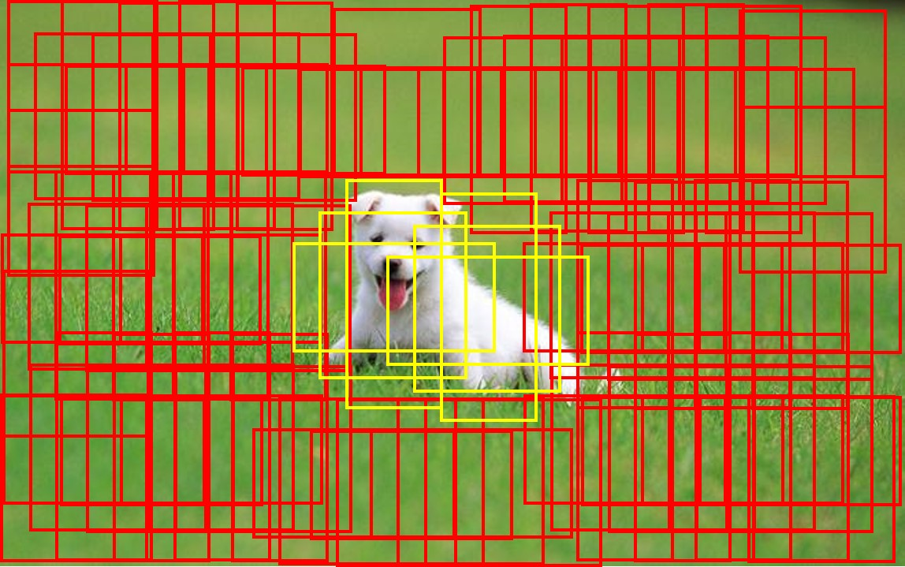
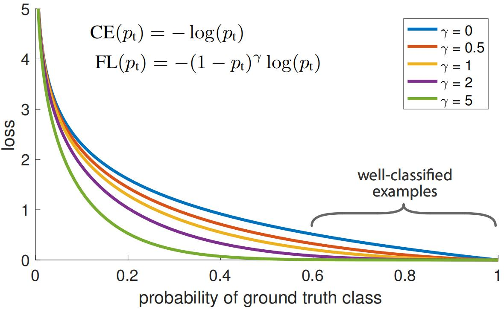

焦点损失——Focal Loss¶
综述¶
会议时间：IEEE International Conference on Computer Vision 2017 (ICCV, 2017)
论文地址：https://openaccess.thecvf.com/content_ICCV_2017/papers/Lin_Focal_Loss_for_ICCV_2017_paper.pdf
针对领域：目标检测
主要思想¶
在目标检测中，大部分情况下前景区域只占一小部分，因此对应于前景的锚点数量往往小于对应于背景的锚点数量，前景背景存在严重的分类不平衡问题，如下图所示：

直接将所有锚点都用于训练的话，分类器的训练过程很容易被背景所主导，从而影响对前景的检测分类。因此在二阶段目标检测器中，第一阶段往往是提议阶段（proposal阶段），例如Faster R-CNN中的RPN模块，首先预测出可能是前景的区域（例如筛选出前2000个样本），进一步传入第二阶段执行分类，从而避免大量的背景区域影响分类器的训练。
而在单阶段目标检测中，检测器必须要同时面对所有的预设锚点（没有proposal模块预先挑选锚点这一过程），面对这一问题常用的解决方法就是按一定的正负样本比例筛选参与优化的锚点样本或者筛选出损失大的样本参与网络的优化，但这些方法都没有在根源上解决问题。
对于背景区域，有一个很明显的特点就是容易分类，面对背景上的锚点，分类器很容易做出正确的决策，因此会对应一个小损失；而面对前景区域上的锚点，分类器往往不容易做出分类决策，因此往往会对应一个比较大的损失。理想情况下，背景区域损失小，对网络影响小，前景区域损失大，对网络影响大，网络会朝着便于前景分类的方向发展。但实际并非如此，背景锚点数量要远大于前景锚点数量，优化背景的次数要远远超过优化前景的次数，并且背景区域不可能做出完美的预测，因此每个背景锚点必然会产生一个不可忽略的损失值（如下图蓝色曲线），大量的背景损失相加之后，最终用于优化背景的损失要远大于优化前景的损失，从而主导训练过程，使网络朝着便于背景分类的方向发展。

解决这一问题，最好的方法就是对背景区域的锚点损失加一个权重，来降低背景损失（如上图非蓝色曲线），从而抑制背景的影响。现在关键就在于如何在训练过程中识别该锚点是位于背景还是前景上，前面提到背景区域容易做出预测，前景区域不容易做出预测，因此可以将问题转化一下：需要设计一个权重计算方法，面对容易预测的结果，需要得到一个小权重，面对不容易预测的结果，需要得到一个大权重，使得网络训练优化的重点集中到不容易预测的锚点上面，这就是焦点损失（Focal Loss）的核心思想。
方法¶
从二元交叉熵入手，传统的二元交叉熵损失函数可以表示为：
p_t越大要求权重越小，p_t越小要求权重越大，因此权重与p_t之前是负相关的关系，本文作者设权重计算方法为(1-p_t)^\gamma，则修改后的损失方程为：
同时作者还针对正负样本类别不平衡引入加权因子\alpha_t：
注意：
- 整个损失受两个权重参数影响，其中(1-p_t)^\gamma根据样本分类的难易程度做变化，用于提升难分类样本的损失权重，\alpha_t针对正负样本的差异而变化，用于解决正负类不平衡问题；
- (1-p_t)^\gamma形式不唯一，只要是和p_t负相关即可。
换个角度来看，其实这种损失并不仅仅只针对前背景的处理，假设现有A、B两类，如果A类比较好识别，B类不好识别，那么利用该损失，很容易将网络优化的侧重点放到B类上，抑制背景和A类的影响，使得网络的优化朝着能够正确判断B类别的方向发展，进一步实现能够同时对背景、A、B做出正确分类的目标，从解决前背景不平衡出发，进一步解决分类难易程度不均衡的问题。问题根源还是在于分类难易程度不均衡，前景背景不平衡只是一种表象。最重要的还是在“动态”两个字，动态调整训练过程，用一个连续变化的权重来影响损失的作用结果，分类结果p正好可以充当这一过程的中介，建立起模型的分类决策与优化决策之间的联系，用一个连续的数值来搭建“桥梁”。
以上仅是笔者个人见解，若有错误，欢迎指正
代码实现¶
参考链接：
- https://github.com/WZMIAOMIAO/deep-learning-for-image-processing
- https://github.com/pytorch/vision/tree/master/torchvision/models/detection
输入：网络预测结果和标签值，注意这里标签值应为独热编码的形式，因此预测值和标签具有一样的数组尺寸。
输出：焦点损失值
注意：
- 为了便于将焦点损失推广到多分类，这里在计算分类损失时，采用多分类网络的优化策略。假设一共有n类（计算时不包含背景），在计算交叉熵损失时面对同一锚点样本，计算n次二元交叉熵结果（二分类损失的形式便于和焦点损失结合），之后利用n个损失共同优化网络；
def sigmoid_focal_loss(
inputs: torch.Tensor,
targets: torch.Tensor,
alpha: float = 0.25,
gamma: float = 2,
reduction: str = "none",
):
"""
Original implementation from https://github.com/facebookresearch/fvcore/blob/master/fvcore/nn/focal_loss.py .
Loss used in RetinaNet for dense detection: https://arxiv.org/abs/1708.02002.
Args:
inputs: A float tensor of arbitrary shape.
The predictions for each example.
targets: A float tensor with the same shape as inputs. Stores the binary
classification label for each element in inputs
(0 for the negative class and 1 for the positive class).
alpha: (optional) Weighting factor in range (0,1) to balance
positive vs negative examples or -1 for ignore. Default = 0.25
gamma: Exponent of the modulating factor (1 - p_t) to
balance easy vs hard examples.
reduction: 'none' | 'mean' | 'sum'
'none': No reduction will be applied to the output.
'mean': The output will be averaged.
'sum': The output will be summed.
Returns:
Loss tensor with the reduction option applied.
"""
# p表示每个锚点的预测概率，尺寸为(锚点数量，类别数)，第二维度不加背景
p = torch.sigmoid(inputs)
# 先利用预测结果与标签求交叉熵损失，注意，这里targets是将标签数据做独热编码后的数据，尺寸和inputs尺寸一样
# reduction设置为"none"，不对结果做任何处理（如：求均值），因为之后还要乘以权重（FL核心思想）
# 这里inputs传入原始预测值，F.binary_cross_entropy_with_logits方法会自动对其加入sigmoid运算
ce_loss = F.binary_cross_entropy_with_logits(
inputs, targets, reduction="none"
)
# 计算得到pt，对应论文公式2。注意这里处理得很妙，将多个分段函数式子化为一个函数式子
# 注意这里p要先将网络的输出传入sigmoid
p_t = p * targets + (1 - p) * (1 - targets)
# 乘以权重因子(1-pt)^gamma，抑制易分类的损失，对应论文公式4
loss = ce_loss * ((1 - p_t) ** gamma)
# 这里alpha对应论文α系数，用于平衡正负样本，默认0.25
if alpha >= 0:
# 和pt处理一样，分段函数转化为单一函数式子，正样本对应α，负样本对应1-α
alpha_t = alpha * targets + (1 - alpha) * (1 - targets)
# 对应论文公式5
loss = alpha_t * loss
# 均值或求和
if reduction == "mean":
loss = loss.mean()
elif reduction == "sum":
loss = loss.sum()
return loss
初步完稿于2023年1月14日